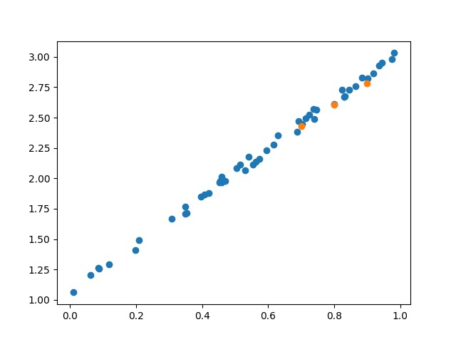
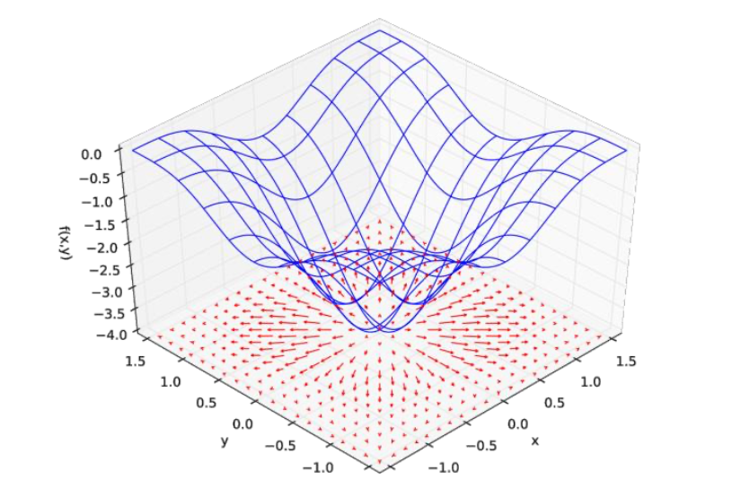

Machine Learning
Supervised Learning
监督学习
&
Unsupervised Learning
无监督学习
Supervised Learning 
-
Speech Recognition
f(
 (vector) ) = "How are you"
(label)
(vector) ) = "How are you"
(label)
-
Image Recognition
f(
 (vector) ) = "Cat" (label)
(vector) ) = "Cat" (label)
Unsupervised Learning
-
woman
(error)
-
man

Function / Model
f
"Cat"
f "有车"
-
Step1
Collect Data (Feature Engineering 特征工程)
数据决定了机器学习的上限,而算法只是尽可能逼近这个上限 -
Step2
Model (y = kx + b ?)
-
Step3
Goodness of Function
-
Step4
Gradient Descent
Linear Regression
warning of math 😪
Step 1: Model
y = w x + b (weight and bias)
A set of function:
f1: y = 2x + 1 f2: y = 3.1x + 2 f3: y = -0.5x + 3 ...infiniteLoss Function
Derivative Rules (求导法则)
-
f (x) = z ( g (x) ), 令: θ = g (x)
f'(x) = z'(θ) * g'(x)
-
f (x) = z (x) + g (x)
f'(x) = z'(x) + g'(x)